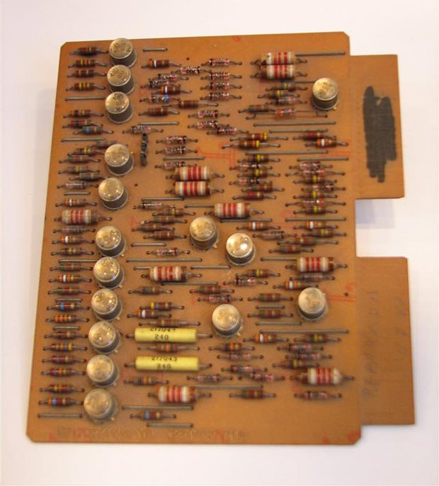
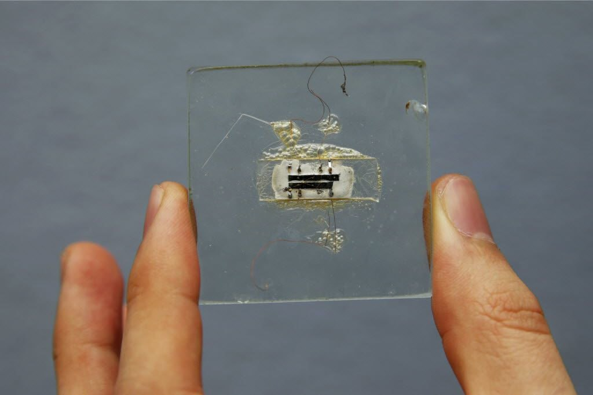

·TERCERA GENERACIÓN: 1966-1971 (Nace la microelectrónica)
-El elemento principal fue el circuito integrado o chip: en un sólo
dispositivo minúsculo, se "encapsula" gran cantidad de elementos
(transitores, condesadores...), con lo que el tamaño de los
ordenadores es mucho menor.
-Velocidad de los ordenadores: aumentó muchisimo (100 millones de
operaciones por segundo).
-Se desarrollan sistemas operativos que faciliatan la
multiprogramación, teleproceso y tiempo compartido.

